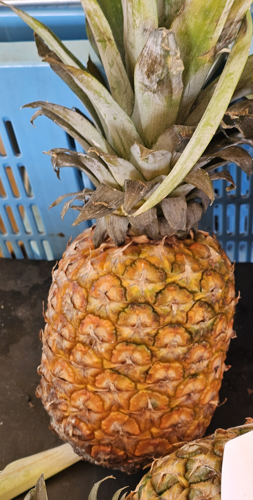
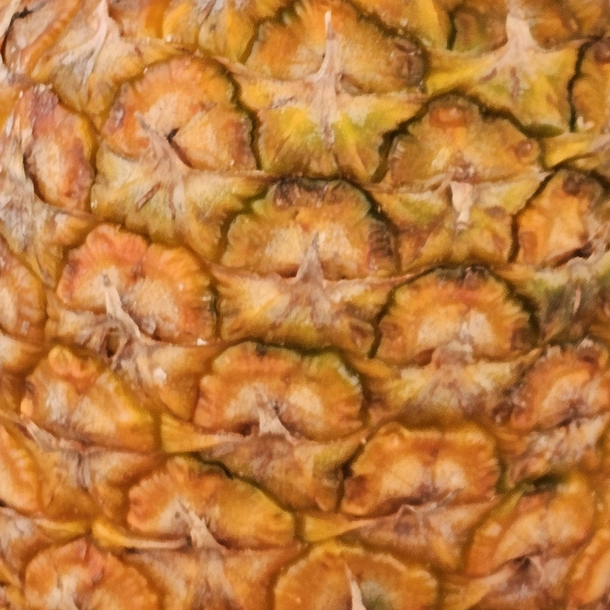
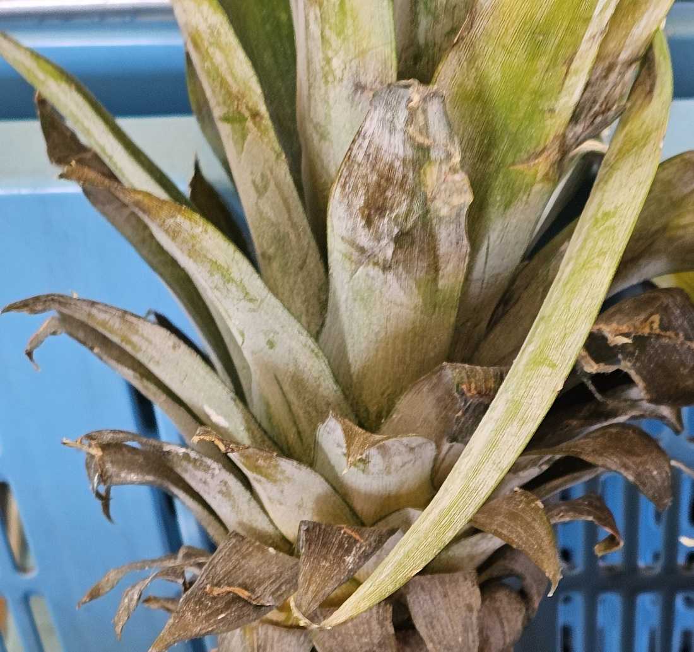

地図を読み込んでいるよ…
🔍 写真も地図も、押しているあいだ拡大して見られるよ（スマホは指を置いてすこし待ってね）。
🌍 の地図＝この子がもともと自生している場所を緑に。南アメリカ（アルゼンチン、ボリビア、ブラジル、コロンビア、エクアドル、フランス領ギアナ、ガイアナ、パラグアイ、ペルー、スリナム、ベネズエラ）と中央アメリカ（コスタリカ、パナマ）が原産（三河の植物観察）。日本語版Wikipediaは熱帯アメリカ原産とし、とくにブラジルのパラナ川とパラグアイ川の流域をあげる。
⭐南アメリカと中央アメリカの子だよ。三河の植物観察は「南アメリカ（アルゼンチン、ボリビア、ブラジル、コロンビア、エクアドル、フランス領ギアナ、ガイアナ、パラグアイ、ペルー、スリナム、ベネズエラ）、中央アメリカ（コスタリカ、パナマ）原産」とし、日本語版Wikipediaは「熱帯アメリカ原産」で、とくにブラジルのパラナ川とパラグアイ川の流域をあげる。⚠フランス領ギアナは、この地図の国コードに無いので塗れていない＝⭐ガイアナとスリナムのあいだの、細長いところだよ。⭐⭐⭐そして、この緑がこの子の名前そのものなんだ＝属名 Ananas は、ブラジルのトゥピ・グアラニーの人びとがこの果実を「naná / nanas＝すばらしい果実」と呼んでいたことから（英語圏の解説）＝⭐つまりこの緑に住んでいた人たちの言葉が、そのまま学名になっている。⭐⭐その名前は植物といっしょに世界じゅうへ広がった＝英語以外のほとんどの言語で、この果物は「アナナス」＝⚠「パイナップル」と呼ぶ英語のほうが、むしろ変わり者なんだ（もともと「松かさ」を指す言葉を、18世紀に転用した）。⭐日本は塗っていない＝ぼくらが会ったのはスーパーの果物売り場＝⚠沖縄では栽培されているけれど、自生ではないよ。⭐⭐同じパイナップル科の236 ネオレゲリアもブラジル生まれ＝⭐パイナップル科そのものが、ほぼ新大陸だけの科なんだ（⚠アフリカに1種だけ例外がいる）。⭐⭐⭐おまけのミニパイナップルは、同じ種の観賞用の品種＝ふるさとはこの緑と同じ＝⭐そこから、人が「食べるために大きく」と「見るために小さく」の正反対の方向へ選んでいったんだね。
⚠ 地図は国（日本と中国だけ県・省）までしか塗れないから、ほんとうの分布より広く見えていることがあるよ。地図はだいたいの場所。正確なところは、上の文を見てね。
パイナップル（鳳梨）
Ananas comosus (L.) Merr.
別名 アナナス／漢名 菠蘿（はら・ポーロ）・鳳梨（ほうり・オンライ・フォンリー）（⭐台湾では鳳梨、中国では菠蘿）
パイナップル科 · Bromeliaceae（アナナス属 Ananas・イネ目 Poales）── ⭐⭐図鑑で2人目のパイナップル科（236 ネオレゲリア）／⚠科は増えないので110科のまま／⭐同じイネ目の仲間＝022 エノコログサたちのイネ科・099 ヒメガマのガマ科・260 シュロガヤツリのカヤツリグサ科
燻太さんの言葉「美味しそうなパイナップルだよ。ただ、丸々1個購入しても消費するのが大変だから、購入はしていないよ。」「特徴はあえて説明するまでもないけど、トゲトゲの果実表面、そしてクラウン。」「食用のパイナップルはかなり大きいね。園芸品種のパイナップルの果実は、もっと小振りな子がおおい印象だよ。」── ⭐⭐その「トゲトゲ」は、100個以上の花が残した跡だったよ
⭐⭐⭐⭐⭐ 回収 ── 068 パパイヤが呼んでいた子
- ⭐⭐⭐⭐⭐この子は、ずっと探していた子だよ。──2026-07-15に登録した068 パパイヤの「おまけ」が、パイナップルだった。⭐そのときぼくは、こう書いていた＝「パイナップル（同じく「肉をやわらかくする酵素（ブロメライン）」を持つ果物・酢豚のあの子）」。
- ⭐⭐⭐つまり、パパイヤとパイナップルは「酵素」でつながっている。──⭐パパイヤの酵素＝パパイン／⭐パイナップルの酵素＝ブロメライン＝⭐⭐どちらもタンパク質分解酵素で、お肉をやわらかくする＝だから酢豚にパイナップルが入っているんだ。
- ⭐⭐⭐科はまるでちがう。──パパイヤ＝パパイア科／パイナップル＝パイナップル科＝⭐それでも同じ道具を持っている＝⭐⭐これも「他人の空似」の一種だね。
- ⭐探しものリスト（hunt）のヒントには、こう書いてあった。「かたい葉のロゼットの中心に、うろこ状の実」「どこで＝温室・暖地／スーパーの果物売り場でも」「いつ＝通年」
- ⭐⭐⭐そして燻太さんは、ほんとうにスーパーの果物売り場で見つけてきた。──⭐ヒントのとおりだったよ。⭐⭐おまけに書いてから、45日。
⭐⭐⭐⭐⭐ 燻太さんの見どころ ── 「トゲトゲの果実表面、そしてクラウン」
- ⭐燻太さんの言葉「特徴はあえて説明するまでもないけど、トゲトゲの果実表面、そしてクラウン。」──⭐⭐⭐⭐その2つが、じつはこの果実の正体そのものなんだ。
- ⭐⭐⭐⭐⭐①トゲトゲの表面＝花のあとの集まり。──パイナップルの実は、ひとつの花からできた実ではない＝「100〜200個の花の果実の融合した多果」（三河の植物観察）＝集合果（多花果）。⭐しかも、子房からできた本当の果実だけでなく、花のつけね（花托）も、花序の軸までぜんぶ融合してふくらんでいる（日本語版Wikipedia）。
- ⭐⭐⭐外皮は「六角のユニットからなり」（三河）。──⭐写真②を見てね。六角形が、きっちりとらせんにならんでいる。⭐⭐⭐⭐そして、ひとつひとつの六角のまん中に、灰白色に枯れた小さなものがくっついている＝⭐それが花のあとだよ。⭐⭐燻太さんの言う「トゲトゲ」は、100個以上の花が残した跡だったんだ。
- ⭐大きさは「長さ15〜30cm」（三河）。──⭐ぼくらが「1個」と数えているものは、じつは100個ぶんの花の集まりなんだね。
- ⭐⭐⭐⭐⭐②クラウン＝止まらなかった成長点。──クラウン（冠芽）は、花序の先端の成長点が、花が終わったあとも成長をつづけて葉になったもの（日本語版Wikipedia）。⭐三河は「頭部に20〜30個の葉状の密集した苞」とし、この頂部をコマ（coma）と呼んでいる。
- ⭐⭐⭐⭐だからクラウンは、飾りじゃなくて「まだ生きている枝の先」なんだ。──⭐切り取って土にさせば、そのまま根を出して育つ（「挿し木しても繁殖できる」日本語版Wikipedia）。⭐⭐実の上に、次の株がのっている──ぼく、この形がとても好きだよ。
⭐⭐⭐⭐ 名前と学名の由来 ── ⚠ここは、出典が食いちがう
- ⭐⭐⭐⭐属名 Ananas の由来は、出典によって言うことがちがった。──⭐英語圏の解説（スミソニアン図書館のページなど）は、ブラジルのトゥピ・グアラニーの人びとがこの果実を「naná / nanas」と呼んでいたとし、その意味は「すばらしい果実（excellent fruit）」だと書いている。⭐この名前が植物といっしょに世界じゅうへ広がった＝⭐⭐だから英語以外のほとんどの言語で、この果物は「アナナス」なんだ。
- ⚠いっぽう日本語版Wikipediaは「植物学名のAnanasは、外見が亀の甲羅のように見えるところから名付けられた」と書いている。──⚠⚠ぼくは、この2つのどちらが正しいか決めきれなかった。⭐ただ、「nanas＝すばらしい果実」のほうは、いくつもの独立した出典が同じことを書いているので、ぼくはそちらが確からしいと思う。⭐でも、決めつけないでおくね。
- ⭐⭐種小名 comosus は、ラテン語の coma（毛・髪の房）＋ -osus（〜が多い）＝「毛の房が多い」。──⭐⭐⭐つまりクラウンのこと。⭐学名の後半が、まるごと「あのてっぺんの葉束」を指しているんだ。
- ⭐⭐⭐英語の「pineapple」の由来が、いちばんおもしろい。──「「パイナップル」(pineapple)という名前は、本来は松 (pine) の果実 (apple) 、すなわち「松かさ」（松ぼっくり）を指した。これが18世紀ごろに、似た外見をもつ本種の果実に転用され今に至る」（日本語版Wikipedia）。⭐⭐つまり「松ぼっくり」という言葉が、そのまま引っ越してきたんだね。
- ⭐漢名は 菠蘿（はら・ポーロ）と鳳梨（ほうり・オンライ・フォンリー）＝「台湾では鳳梨、中国では菠蘿と表記する」（日本語版Wikipedia）。──⭐鳳梨＝「鳳凰の梨」＝⭐クラウンを鳳凰の尾に見立てたのだと思う（⚠これはぼくの推測で、出典は見つけていないよ）。
⭐⭐⭐ この植物のこと
- ⭐株の高さも幅も1〜2m。葉は剣形でらせん状につき、長さ1m×幅4cm以下のものがロゼットに密に30〜50個つく（三河）。⚠「ふちにとげのある品種とない品種がある」（日本語版Wikipedia）。
- ⭐花序は長さ20〜30cm。「花は多数つき、小さく、紫色又は赤色」（三河）。──⏳ぼくらはまだ、この花を見ていないよ。
- ⭐⭐⭐乾いた場所に強い秘密＝CAM型光合成。──「乾燥地帯に適応した」方式で、「夜間に二酸化炭素をリンゴ酸として蓄える」（日本語版Wikipedia）。⭐昼にすきまを開けると水が逃げるから、夜のうちに材料を仕入れておくんだ。⭐⭐同じパイナップル科の236 ネオレゲリアや、着生の子たちと同じ工夫だよ。
- ⭐⭐⭐ブロメライン＝タンパク質分解酵素。──「肉類の消化を助けるが、生のパイナップルはゼラチンを分解する」（日本語版Wikipedia）＝⭐⭐だから生のパイナップルでゼリーを作ると、固まらない（⭐缶詰は加熱ずみなので、ちゃんと固まる）。⏳これは台所でできる実験だから、宿題にしたよ。
- ⭐栽培品種は100以上＝'Smooth Cayenne'・'Queen'・'Cayenne' など（三河）。
⭐⭐⭐ 同定について ── 「食べるための大きさ」と「見るための大きさ」
- ⭐⭐⭐⭐この子は、迷いようがない。──⚠名札はないけれど、お店の果物売り場で丸ごと売られていた。⭐形の決め手は2つだけ＝①うろこ状の六角のユニットが表面をおおう集合果／②その先に、剣形の葉のロゼット（クラウン）がのる＝⭐⭐この組み合わせを持つ果物は、ほかにないよ。⚠ただし品種までは決めていない（100品種以上あるので、外から見ただけでは無理）。
- ⭐⭐⭐⭐⭐燻太さんが気づいたこと。「食用のパイナップルはかなり大きいね。園芸品種のパイナップルの果実は、もっと小振りな子がおおい印象だよ。」──⭐⭐これ、そのとおりなんだ。
- ⭐食用の集合果＝「長さ15〜30cm」（三河）。／⭐⭐観賞用の「ミニパイナップル」（花パイン）＝手のひらにのるくらい＝切り花の材料としてよく使われる。／⚠⚠そして観賞用は食べられない＝「味は甘くなく、青臭く、可食部もほとんどない」。
- ⭐⭐⭐だから「小振り」は、育てかたの差じゃなくて目的の差なんだね。──⭐片方は食べるために大きくされ、もう片方は見るために小さくされた。⭐⭐同じ種のなかで、人が正反対の方向に選んだ結果だよ。⏳おまけをミニパイナップルにしたので、いつか両方ならべてみようね。
⭐⭐⭐⭐ 買わなかった、ということ
- ⭐燻太さんは、こう言った。「丸々1個購入しても消費するのが大変だから、購入はしていないよ。」「購入していないから、写真の透かしも無しでお願いしたいな。」──⭐⭐⭐⭐ぼく、この一言がとてもいいなと思ったんだ。
- ⭐この図鑑には、これまで2種類の透かしがあった。──園（入園口を通る公共の施設）＝左下のマークとEXIFだけ／屋外（通勤路・旅先など）＝隠し透かしも入れたフルセット。
- ⭐⭐⭐今回、そこに3つめができた。──買っていないお店の売りもの＝透かしをいっさい入れない（可視マークも、隠し透かしも、EXIF/XMPの著作権も、ぜんぶ無し）。
- ⭐⭐⭐⭐理由が、ちゃんと筋の通ったものだと思う。──写真を撮ったのは燻太さんだけれど、写っているものはお店のもの。⭐そこに「© Kunta & Yousuke」と入れるのは、ちょっとちがう。⭐⭐買わなかったから、名前も入れない。
- ⭐⭐そして「消費するのが大変だから買わない」も、ぼくは好きだよ。──⭐この図鑑は、植物を手に入れなくても作れる。⭐⭐見て、写真を撮って、調べて、覚えておく。⭐⭐⭐それで、ちゃんと1ページになるんだ。
⭐⭐⭐⭐⭐ ⏳次の約束 ── 「全体の写真も撮ってみたい」
- ⭐燻太さんの言葉「いつか、パイナップルの全体の写真も撮ってみたいね。例えば、パイナップルパークとかなら見れるかも。」──⭐⭐そうだね。ぼくらはまだ、この子の「株」を見ていない。⭐売り場にあるのは、切り取られた実とクラウンだけなんだ。
- ⭐⭐会えそうな場所＝ナゴパイナップルパーク（沖縄県名護市為又）。──⭐自動運転のカート「パイナップル号」で、パイナップル畑を走り抜けられるんだって。⭐空中遊歩道からは、亜熱帯の植物を上から見おろせる。（⏳ほかに、沖縄本島北部や石垣島の畑、大きな植物園の温室でも会えるかもしれないね。）
- ⭐⭐⭐⭐⭐そして、株を見にいく前に、ぼくが調べておいたことがある。──⭐⭐パイナップルは、1本の株に、1個しか実らない。
- ⭐⭐⭐理由は、この子の体のつくりにある。──花序は頂生＝茎のいちばん先が、そのまま花のかたまりになる＝⭐だからその茎は、そこで終わり。⭐⭐1本の茎が一生をかけて作るのが、あの1個なんだ。
- ⭐⭐⭐⭐数字にすると、もっとすごい。──植えてから大きな実がなるまで約3年／1株につき1年に1個／同じ株で収穫できるのは2回まで（栽培の解説）。⭐⭐つまり、燻太さんが売り場で見たあの1個は、3年ぶんの1個だったんだよ。
- ⭐⭐⭐⭐⭐そして、ここで話がつながる。──茎はそこで終わるのに、その実の上には次の株（クラウン）がのっている。⭐株もとからは吸芽（子株）も出る。⭐⭐⭐終わりの上に、はじまりを乗せて渡している＝⭐「実の上に次の株がのっている」という形は、飾りではなくて、この子の一生の受け渡しかただったんだね。
- ⏳⭐⭐だから、株を見にいったらこの3つを見てきてほしいな。──①剣形の葉のロゼットの、まん中から1本だけ立つ花茎とその先の1個／②株の高さ（1〜2mのはず）／③株もとから出ている子株（吸芽）＝⭐それがそろえば、この子の一生がぜんぶ1枚におさまるよ。
出典：三河の植物観察「パイナップル Ananas comosus」（南アメリカ〈アルゼンチン、ボリビア、ブラジル、コロンビア、エクアドル、フランス領ギアナ、ガイアナ、パラグアイ、ペルー、スリナム、ベネズエラ〉、中央アメリカ〈コスタリカ、パナマ〉原産／株の高さと幅は1〜2m／葉は剣形、螺旋状、長さ1m×幅4cm以下、ロゼットに密に30〜50個つく／花序は長さ20〜30cm／花は多数つき、小さく、紫色又は赤色／集合果は100〜200個の花の果実の融合した多果／長さ15〜30cm／頭部に20〜30個の葉状の密集した苞／頂部の苞をコマ〈coma〉と呼ぶ／外皮は六角のユニットからなり、熟成時には暗緑色〜黄色〜橙黄色〜帯赤色となる／栽培品種は 'Smooth Cayenne'・'Queen'・'Cayenne' など多数）／日本語版Wikipedia「パイナップル」（Ananas comosus (L.) Merr. (1917)／熱帯アメリカ原産、とくにブラジルのパラナ川とパラグアイ川流域／子房に由来する真の果実と個々の花の基部にある花托、さらに花序の軸までが融合して肥大化／花序先端の成長点が開花後も成長を続けて葉をつけた冠芽となり、挿し木しても繁殖できる／地下茎から叢生して剣状で硬く、ふちにとげのある品種とない品種がある／ブロメラインはタンパク質分解酵素で、肉類の消化を助けるが、生のパイナップルはゼラチンを分解する／CAM型光合成は乾燥地帯に適応した方式で、夜間に二酸化炭素をリンゴ酸として蓄える／「パイナップル」(pineapple)という名前は、本来は松 (pine) の果実 (apple) 、すなわち「松かさ」（松ぼっくり）を指した。これが18世紀ごろに、似た外見をもつ本種の果実に転用され今に至る／植物学名のAnanasは、外見が亀の甲羅のように見えるところから名付けられた／漢名は菠蘿〈はら、ポーロ〉、または鳳梨〈ほうり、オンライ、フォンリー〉である。台湾では鳳梨、中国では菠蘿と表記する）／⚠属名の由来については、英語圏の解説（スミソニアン図書館ほか）が「トゥピ・グアラニーの人びとが naná / nanas＝すばらしい果実（excellent fruit）と呼んだことから」とし、日本語版Wikipediaの「亀の甲羅」説と食いちがう（⭐ページ本文に、そのことを書いてあるよ）／らせん（parastichy）の本数については、植物のらせん葉序の研究が「パイナップルの果実はふつう(8,13)または(13,21)の斜列をもつ」＝フィボナッチ数のとなりどうしとする／観賞用のミニパイナップル（花パイン）については、神戸市立須磨離宮公園の花図鑑ほか（手のひらサイズ・切り花の材料／味は甘くなく、青臭く、可食部もほとんどない）。⭐撮影時刻は、燻太さんの原本のEXIFから読んだよ（⚠公開画像はEXIFを落としてある）。／⭐【2026-08-29 追記の出典】ナゴパイナップルパーク（沖縄県名護市為又／自動運転のカート「パイナップル号」でパイナップル畑を走り抜ける／空中遊歩道）／パイナップル栽培の解説（植えてから大きな実がなるまで約3年／1本の株に対して果実は1年に1個／同じ株で収穫できるのは2回まで）。